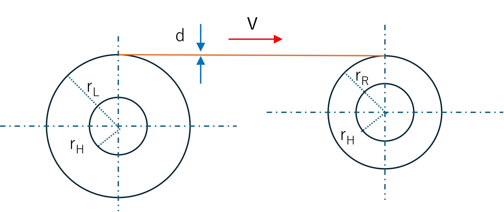
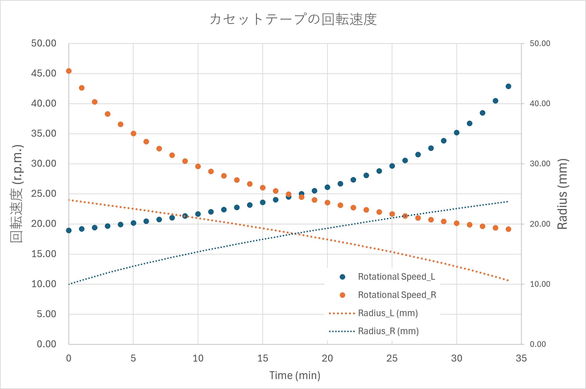

カセットテープ，私の時代において，音楽を聴くうえで欠かせない存在でした．
レコードからダビングしたり，車用に編集したり，ナカミチに憧れたり．．．．
学生時代のころ，ラボの先輩方と，”カセットテープの回転速度ってどう変化する？”，という話題になりました．
先輩は，微分方程式を使って解こうというところまでは記憶にあるのですが，その後どうなったかの記憶はありません．
ふと先日，どうなっているのだろう？ともう一度計算を試みることにしました．
ポイントは，
テープの進行速度は一定である
テープには厚みがあるので，再生時には，
左側は，徐々に半径が小さくなる
右側は，徐々に半径が大きくなる
というものです．
つまり，
カセットテープは，ヘッド部分でのテープの速度が一定になるように作られている（はず）． なので，送り側，受け側のリールの半径が徐々に変化するので，それに伴い，回転速度も時間とともに変化する
ことになります．

カセットテープの模式図を描いてみました．
実際には，左右の軸は水平なのですが，簡単にするためにテープの進行を水平にしてみました
ここで，
rL ： 左側のテープの半径
rR ： 右側のテープの半径
rH ： リールハブ（中央の白いもの）の半径
V ： テープの進行速度（一定）
ｄ ： テープの幅
となります．
まずは簡単に，リールハブ (rH）がない状態を考えます．
rL0 ： 左側のリールの半径
一定速度でテープが進むということは，ｔ時間の間に
vdt
だけ面積が変化することになります．
したがって，
送り側の面積は一定速度で減少
受け側の面積は一定速度で上昇
することになります．
$$
\begin{equation}
\begin{split}
\pi \ r_L^2(t) &= \pi \ r_{L0}^2 - v d t \\
\pi \ r_R^2(t) &= \hspace{ 35 pt} v d t \\
\end{split}
\end{equation}
$$
$$
\begin{equation}
\begin{split}
r_L(t) &= \sqrt{\ r_{L0}^2 - \frac{v d t}{ \pi}} \\
r_R(t) &= \sqrt{ \frac{v d t}{ \pi}} \\
\end{split}
\end{equation}
$$
半径ｒで速度ｖで回転する場合，一周する時間Tは，
$$
\begin{equation}
\begin{split}
2 \pi r &= vT \\
f &= \frac{1}{T} = \frac{v}{2 \pi r }
\end{split}
\end{equation}
$$
したがって，LRそれぞれの回転速度(Hz)は，
$$
\begin{equation}
\begin{split}
f_L(t) &= \frac{v}{2 \pi \ \sqrt{\ r_{L0}^2 - \frac{v d t}{ \pi}}} \\
f_R(t) &= \frac{v}{2 \pi \ \sqrt{ \frac{v d t}{ \pi}}} \\
\end{split}
\end{equation}
$$
リールハブがある場合も，R側のみ影響し，rHとすると，
$$
\begin{equation}
\begin{split}
r_L(t) &= \sqrt{\ r_{L0}^2 - \frac{v d t}{ \pi}} \\
r_R(t) &= \sqrt{r_H^2 + \frac{v d t}{ \pi}} \\
\end{split}
\end{equation}
$$
$$
\begin{equation}
\begin{split}
f_L(t) &= \frac{v}{2 \pi \ \sqrt{ r_{L0}^2 - \frac{v d t}{ \pi}}} \\
f_R(t) &= \frac{v}{2 \pi \ \sqrt{ r_H^2 + \frac{v d t}{ \pi}}} \\
\end{split}
\end{equation}
$$
毎分(r.p.m.)にすると，
$$
\begin{equation}
\begin{split}
f_L(t) &= \frac{60 \ v}{2 \pi \ \sqrt{ r_{L0}^2 - \frac{v d t}{ \pi}}} \\
f_R(t) &= \frac{60 \ v}{2 \pi \ \sqrt{ r_H^2 + \frac{v d t}{ \pi}}} \\
\end{split}
\end{equation}
$$
実際の回転速度は，Copilotによると，30分テープの場合，
rL0 ： 左側のリールの初期半径 ： 24 mm
v ： テープの速度 ： 47.6 mm/s
d ： テープの厚み ： 15 μm
rH： リールハブの半径 ： 10 mm
とのことでした．
最初のLRそれぞれの半径は当然ながら，
$$
\begin{equation}
\begin{split}
r_L(0) &= \sqrt{\ r_{L0}^2 - \frac{v d \cdot 0}{ \pi}} = 24 \ mm\\
r_R(t) &= \sqrt{ r_H^2 + \frac{v d \cdot 0}{ \pi}} = 10 \ mm\\
\end{split}
\end{equation}
$$
$$
\begin{equation}
\begin{split}
f_L(0) &= \frac{60 \ v}{2 \pi \ \sqrt{ r_{L0}^2 - \frac{v d \cdot 0}{ \pi}}} \\
&= \frac{60 \times 47.6 \ mm/s}{2 \pi \times 24 \ mm}\\
&= 18.94 \ r.p.m. \\
f_R(0) &= \frac{60 \ v}{2 \pi \ \sqrt{ r_H^2 + \frac{v d \cdot 0t}{ \pi}}} \\
&= \frac{60 \times 47.6 \ mm/s}{2 \pi \times 10 \ mm}\\
&= 45.46 \ r.p.m. \\
\end{split}
\end{equation}
$$
30分後には，
$$
\begin{equation}
\begin{split}
r_L(0) &= \sqrt{\ r_{L0}^2 - \frac{v d \cdot 30 \times 60}{ \pi}} = 12.92 \ mm\\
r_R(t) &= \sqrt{ r_H^2 + \frac{v d \cdot 30 \times 60}{ \pi}} = 22.56 \ mm\\
\end{split}
\end{equation}
$$
$$
\begin{equation}
\begin{split}
f_L(0) &= \frac{60 \ v}{2 \pi \ \sqrt{ r_{L0}^2 - \frac{v d \cdot 30 \times 60}{ \pi}}} \\
&= 35.18 \ r.p.m. \\
f_R(0) &= \frac{60 \ v}{2 \pi \ \sqrt{ r_H^2 + \frac{v d \cdot 30 \times 60}{ \pi}}} \\
&= 20.15 \ r.p.m. \\
\end{split}
\end{equation}
$$
最大時間は，
$$
\begin{equation}
\begin{split}
r_L(t) &= r_H(t) = \sqrt{\ r_{L0}^2 - \frac{v d t}{ \pi}} \\
\frac{v d t}{ \pi} &= r_{L0}^2 - r_H^2 \\
t &= \frac{\pi (r_{L0}^2 - r_H^2)}{vd} \\
&= \frac{\pi (24^2 - 10^2) [mm^2]}{47.6 [mm/s] \times 15E-3 [mm]} \\
&= 2094.40 [s] = 34.91 [min]
\end{split}
\end{equation}
$$
とちょっと余裕があることになります．
図示すると，

ということになります．
これは，カセットテープのみならず，ビデオテープ，オープンリールなどにも適用できる計算方法ですね．．．．
昔々，一橋大学の上坪先生がオープンリールのビデオシステムで画像を記録していたのを覚えています．遠心顕微鏡だったっけな？